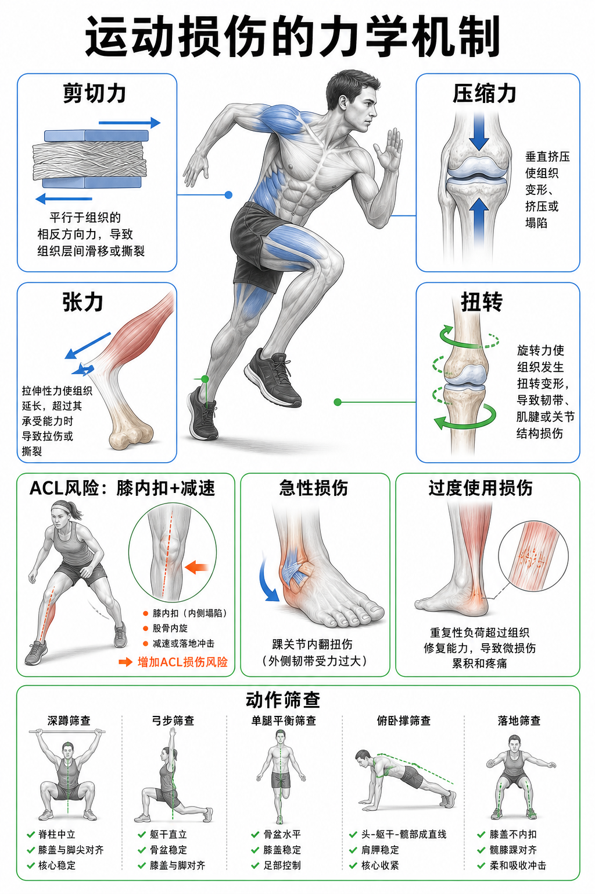

Day 20 · 运动损伤的力学机制
一句话总结
运动损伤不是“倒霉碰坏了”这么简单，而是组织承受了超过可恢复能力的力: 剪切、压缩、张力、扭转决定受力方向，急性冲击、重复累积、动作代偿和疲劳决定风险什么时候爆发。

核心要点
-
急性损伤: 单次外力或动作失控超过组织承受能力，常见扭伤、拉伤、撞击伤。
急性损伤像保险丝被一次性烧断。关键不是疼得突然，而是负荷峰值超过组织当下上限。真实例子
字面意思
急性 = 短时间发生。常由落地、变向、碰撞、滑倒或一次错误发力触发。
大白话
像绳子被猛拉一下，超过极限就会断裂或部分撕裂。
考试判断
题干有“突然、扭到、落地、碰撞、啪一声”，优先考虑急性机制。
篮球落地踩到别人脚，踝关节快速内翻，外侧韧带承受过大张力与扭转，形成踝扭伤。冲刺中突然加速，腘绳肌被高速拉长，可能出现拉伤。
训练含义预防急性损伤要降低失控峰值: 落地技术、减速能力、单腿稳定、场地鞋底摩擦、疲劳管理都要管。
常见误解❌以为急性损伤一定来自外力碰撞。✅很多急性损伤也来自自身减速、变向或错误落地。
-
过度使用损伤: 单次负荷不大，但重复次数、恢复不足和组织适应不足让微损伤累积。
过度使用不是练一次太狠，而是恢复账户长期透支。肌腱炎、应力骨折、胫骨内侧疼痛常属这类逻辑。
真实例子变量 风险怎么升高 训练信号 训练量 总次数、总距离、总跳跃次数过快增加。 疼痛从训练后出现，逐渐提前到训练中。 恢复 睡眠、营养、休息日不足，组织修复追不上。 热身后好一点，隔天又反复。 技术 同一代偿反复压在同一组织上。 左右不对称、局部总先酸痛。 跑量突然翻倍，小腿后侧肌腱和胫骨反复承受张力与冲击，可能从轻微不适发展为跟腱痛或应力反应。
训练含义调整过度使用损伤，优先看负荷进阶、疼痛时间线、动作重复模式和恢复，而不是只找“哪个动作错了”。
常见误解❌以为没有一次明确扭到就不是损伤。✅慢慢累积的微损伤也能形成真实损伤。
-
剪切力: 两个相邻组织层面朝相反或平行方向滑移，容易造成关节面、韧带或软组织受压错位。
剪切力像两块板夹着毛巾反向推。毛巾不是被直接压扁，而是被层间滑移撕扯。真实例子
字面意思
Shear force = 平行于组织面的相对滑动力。
大白话
像把一副扑克牌上下层错开推，层与层之间最吃力。
训练判断
膝、腰、肩在不稳姿势下承受水平错位，剪切风险会升高。
深蹲或弓步中膝盖控制差，胫骨相对股骨出现过多前后或内外滑移，韧带和半月板压力会增加。腰椎在负重屈曲加旋转时，也会叠加剪切。
训练含义减少剪切不是禁止关节移动，而是让关节在可控轨迹里承受负荷。髋膝踝对线、核心稳定和速度控制都很重要。
常见误解❌以为只有垂直重量才伤关节。✅水平方向的错位力也会让关节结构受压。
-
压缩力: 两端向中间挤压组织，适量可促进适应，过量或角度差会造成局部压力集中。
压缩力像按海绵。均匀按压可承受，斜着硬压或长时间压在一点上更容易出问题。
训练含义场景 可能受压结构 判断重点 深蹲 膝关节软骨、半月板、髌股关节。 负荷、深度、膝轨迹、疼痛反应。 硬拉 椎体、椎间盘、髋关节。 中立脊柱、腹压、杠铃贴身。 跳跃落地 足踝、膝、髋、脊柱。 落地吸收、膝内扣、疲劳程度。 骨骼和软骨需要机械负荷才能适应，但负荷进阶要让组织来得及修复。压缩力可训练，也可过载，区别在剂量和控制。
常见误解❌以为压缩力一定坏。✅适量压缩是骨密度和软骨健康刺激，坏的是超量、偏斜、疲劳下反复堆叠。
-
张力: 组织被拉长时承受拉应力，肌肉、肌腱、韧带都可能在过大张力下受损。
张力像拉橡皮筋。正常拉伸会回弹，速度太快、拉得太远或疲劳时拉，就可能超过弹性范围。训练含义
肌肉
高速离心或被动拉长时最容易拉伤，例如冲刺腘绳肌。
肌腱
反复高张力会让跟腱、髌腱出现疼痛和负荷不耐受。
韧带
关节被拉到稳定范围外，韧带负责“兜底”，过量就会扭伤。
离心训练能提高组织承受张力能力，但必须渐进。突然加入大量北欧腿弯举、跳跃或冲刺，容易让张力刺激超出恢复能力。
常见误解❌以为拉伸越多越安全。✅柔韧性只是因素之一，力量、速度控制和组织耐受更关键。
-
扭转力: 组织绕轴旋转受力，常和剪切、张力一起出现，变向和落地最常见。
扭转力像拧毛巾。单纯直上直下未必危险，卡住一端再旋转，组织就要承受更大扭矩。
真实例子动作 扭转来源 风险控制 变向急停 脚钉在地面，身体继续旋转。 先降重心、髋膝踝同向、减少膝内扣。 投掷/挥拍 躯干和肩髋快速旋转。 胸椎、髋部活动度和核心抗旋转。 负重转体 腰椎在负重下旋转。 用髋和胸椎转，避免腰椎硬拧。 足球变向时鞋钉抓地太牢，身体转向但膝盖向内塌，膝关节同时承受扭转、剪切和张力，ACL 风险显著升高。
常见误解❌以为旋转训练都危险。✅危险的是失控、疲劳、负荷过大或关节被锁死时旋转。
-
ACL风险: ACL 损伤常见于减速、变向、落地时膝内扣叠加旋转和剪切。
ACL 风险不是一个单点错误，而是“膝内扣 + 减速 + 足固定 + 髋控制不足 + 疲劳”的组合题。真实例子
字面意思
ACL = 前交叉韧带，限制胫骨相对股骨过度前移和旋转。
大白话
像膝关节里的安全带，防止小腿骨在某些方向上乱跑。
为什么影响训练
落地和变向时若膝盖向内塌，安全带会承受过大拉力和扭力。
跳箱落地下落时膝盖内扣、足弓塌陷、髋外展外旋控制不足，地面反作用力从脚传到膝，膝关节会被推向危险组合位置。
训练含义ACL 风险管理常用单腿落地、侧向减速、臀中肌和腘绳肌强化、髋膝踝对线训练。重点不是让膝永远不动，而是让它不在高速冲击下失控内扣。
常见误解❌以为只练股四头肌就能保护 ACL。✅腘绳肌、臀肌、足踝控制、落地技术和疲劳管理都参与保护。
-
动作筛查: 筛查不是诊断疾病，而是找出可能放大损伤力的代偿模式。
筛查像给动作做体检。它不能直接说“你一定会受伤”，但能提示哪里更容易把负荷压到错误位置。
训练含义筛查动作 看什么 常见风险线索 深蹲 脊柱、骨盆、膝盖、足弓。 圆背、膝内扣、足弓塌陷。 弓步 左右控制、髋膝踝对线。 骨盆晃、膝盖内夹、前脚不稳。 单腿平衡 足踝和髋稳定。 髋下沉、躯干侧倒、足部乱抓地。 落地 吸收冲击和减速能力。 膝内扣、落地过硬、重心失控。 筛查后不要只贴标签，要把发现转成训练: 活动度不足补活动度，控制差补稳定，负荷太快就降量，疲劳导致代偿就调整休息。
常见误解❌以为筛查发现代偿就必须停止训练。✅多数情况是调整动作、负荷和进阶顺序，而不是一刀切禁练。
常见误区
❌很多人以为疼痛出现才说明损伤开始。✅过度使用损伤常在疼痛前已有负荷累积和恢复不足。
❌很多人以为膝盖不能过脚尖就安全。✅真正要看髋膝踝对线、负荷、速度、深度和个体结构。
❌很多人以为动作筛查能预测所有损伤。✅筛查只能发现风险线索，不能替代医学诊断。
记忆口诀
急性看峰值，慢性看累计；剪压张扭四种力，膝内扣减速要警惕；筛查找代偿，训练调剂量。
翻转卡复习
实操关联
- 增肌: 增量要让肌腱和关节一起适应，不要只看目标肌能不能撑住。
- 减脂: 疲劳和热量缺口会降低控制能力，循环训练后半段更要看膝、腰、足踝轨迹。
- 爆发: 变向和跳跃先练减速与落地吸收，再追求更高速度和更大弹性。
- 耐力: 跑量、坡度、鞋、地面和恢复共同决定过度使用风险。
- 康复: 疼痛下降不等于组织完全恢复，要按负荷耐受逐步回到专项动作。
- 考试: 看到 ACL 常联想膝内扣、减速、旋转和非接触伤；看到肌腱炎联想过度使用。